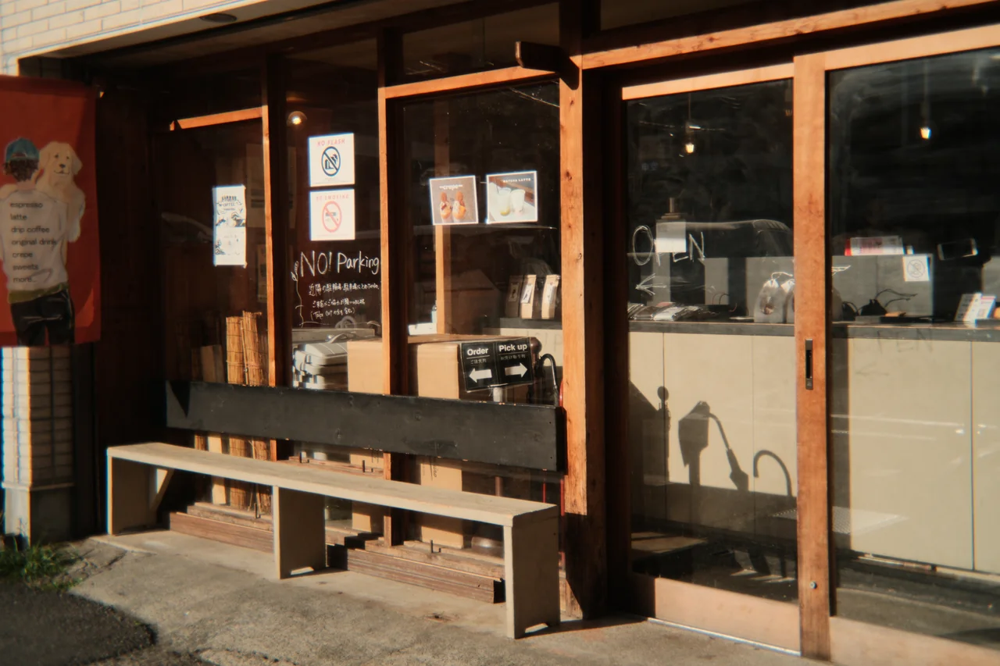

Aller au contenu
FUJIFILM
DAILY
Archives
Apparence
Système
Clair
Sombre
Le journal photographique ·
samedi 7 novembre 2026
FUJIFILM DAILY

© Bold Lens Co. — photographie réalisée avec le BL-32. ·
Source de l’image
Dernière édition
Le goût de l’image imparfaite
Ouvrir le numéro
↗
Télécharger le PDF
Les archives
Dans ce numéro
Objectifs et découvertes
BL-32 : une seconde vie pour l’optique du jetable
01
Firmwares et logiciels
Trois GFX reçoivent une mise à jour de maintenance
02
L’atelier Fuji
Astia, une autre idée de la couleur d’automne
03
L’atelier Fuji
Un automne délavé avec AgfaChrome RSX II 200 Expired
04